Public Health and STIs
- STBBI = sexually transmitted and bloodborne infections. The two are grouped because the risk factors, stigma and contact management are the same.
- Chlamydia is the most commonly reported infectious disease in Canada, and it is still rising. Gonorrhea and syphilis are rising faster in the last few years.
- Syphilis has gone from rare to common. In Middlesex-London it went from fewer than 20 cases a year in the 1990s to well over 120.
- Gonorrhea is running out of antibiotics. Penicillin → tetracyclines → fluoroquinolones → third-generation cephalosporins, each step forced by resistance.
- Everyone is a risk factor. Sex is normal and near-universal, so the public health approach is not abstinence — it is testing, treatment and stigma reduction.
- Chlamydia, gonorrhea, syphilis, HIV, hepatitis B and C are reportable. Reporting is a legal obligation on you as a physician, and it is what enables surveillance and contact tracing.
- U = U. Treat HIV, get the viral load undetectable, and transmission stops. Testing is therefore prevention.
Learning Objectives
- Identify common STIs in Canada, including relevant age groups.
- Describe patterns of global disease burden with regard to STIs.
- Identify and list risk factors for STIs.
- Review the role of public health in responding to STIs, and the role of physicians in reporting.
- Outline population-level interventions that reduce the burden of STIs.
Dr. Alex Summers, Associate Medical Officer of Health at the Middlesex-London Health Unit. 20 minutes, recorded September 2021. This is the deliberate step out of the individual patient encounter that 4.6 covers, and into the population view.
STI vs STBBI
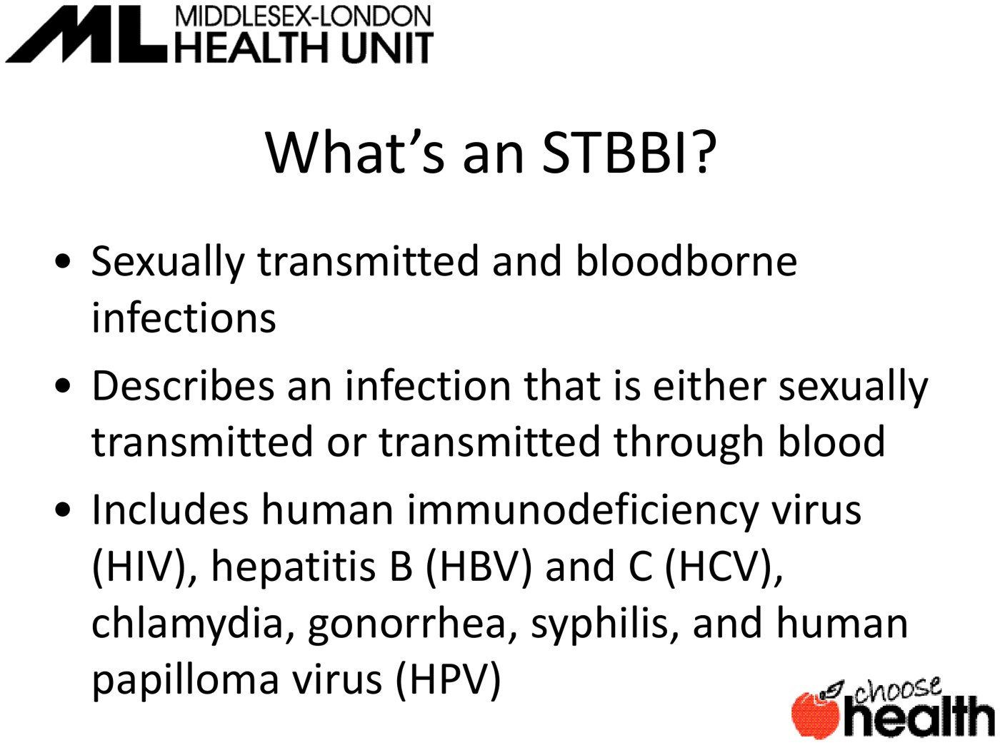
STBBI covers infections that are sexually transmitted or transmitted through blood: HIV, hepatitis B, hepatitis C, chlamydia, gonorrhea, syphilis, HPV and more. You will increasingly hear STBBI rather than STI.
Because the risk factors overlap heavily, the stigma is similar, and case and contact management is approached the same way. Grouping them makes the public health response coherent.
Epidemiology
What is actually happening in London, in Ontario, and worldwide.
Middlesex-London
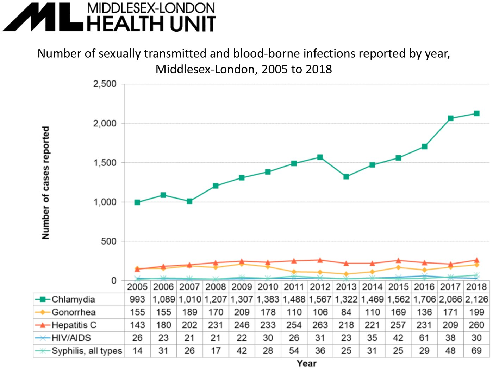
- Chlamydia dwarfs everything else — and has climbed steadily over 15 years.
- Gonorrhea is climbing, especially in the most recent years.
- Syphilis is rising fastest relative to its own history.
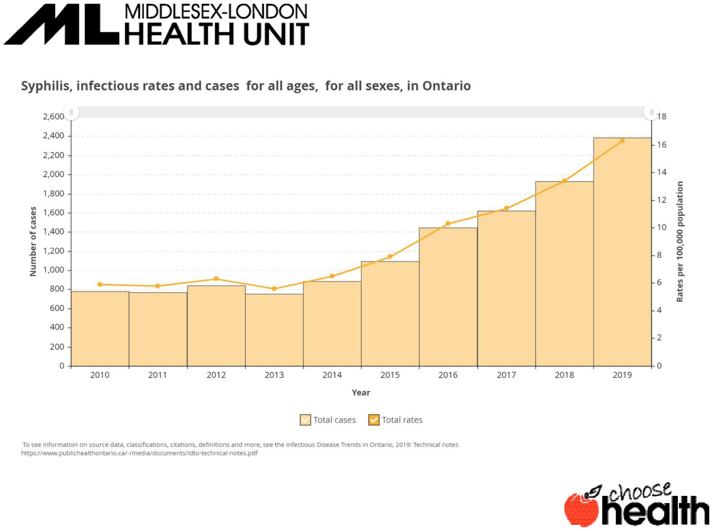
Syphilis in Ontario. Rare a decade ago; climbing steeply in the last 3–5 years.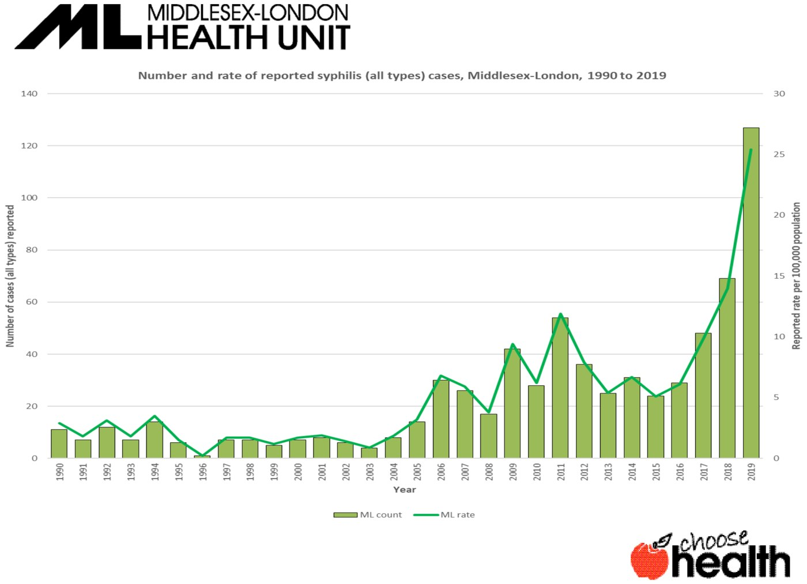
Syphilis in Middlesex-London, 1990–2019. Absolute numbers: <20 a year in the mid-1990s, now north of 120 and pushing 200.Bacterial STI rates were very low in the early 1990s, and the explanation offered is behaviour change following the HIV epidemic — condoms were used readily because of fear. As that fear receded, barrier use fell, and the bacterial STIs came back.
In his closing remarks he names the modern version of the same mechanism: effective contraception and HIV prevention with PrEP mean fewer people feel they need a condom, so bacterial STI transmission keeps rising.
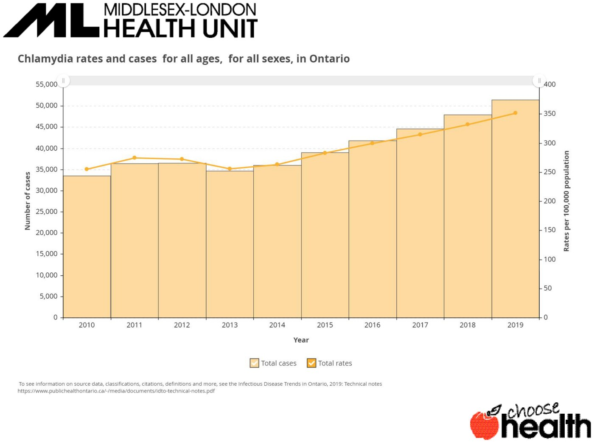
Chlamydia — rising locally and provincially.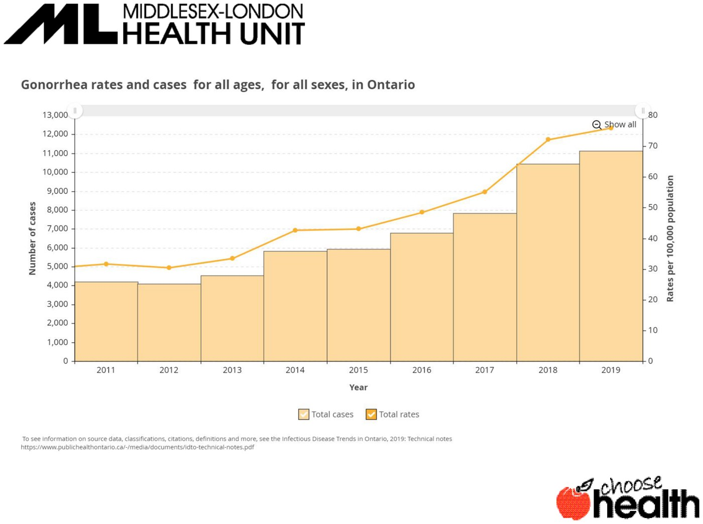
Gonorrhea — an even more notable recent climb.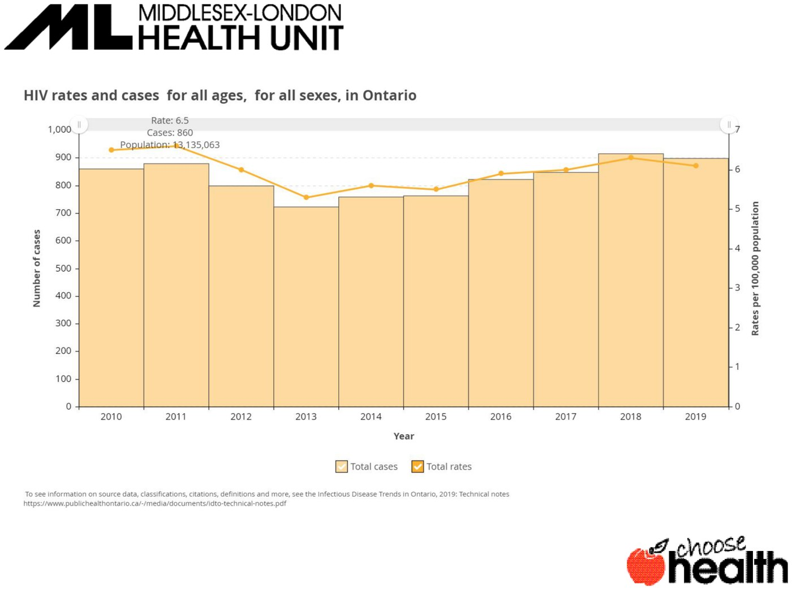
Caption warning: the auto-transcript renders "STI" variously as "babies," "guys," "Saudis," "setbacks," "acids," "FBI" and "eyes," and "syphilis rates climb" as "the crime that is happening." The figures above are read off the slides.
Global Burden and Resistance
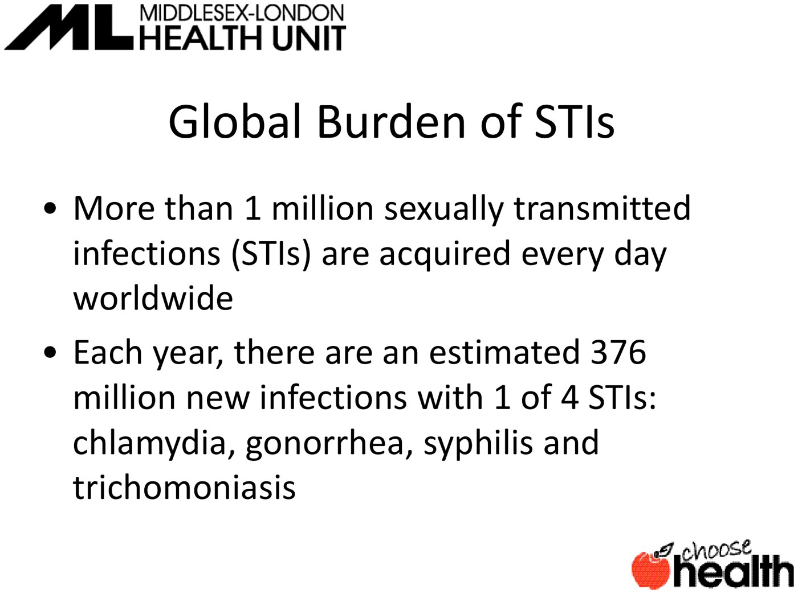
More than 1 million STIs acquired every day worldwide. An estimated 376 million new infections a year with one of four: chlamydia, gonorrhea, syphilis, trichomoniasis (WHO data).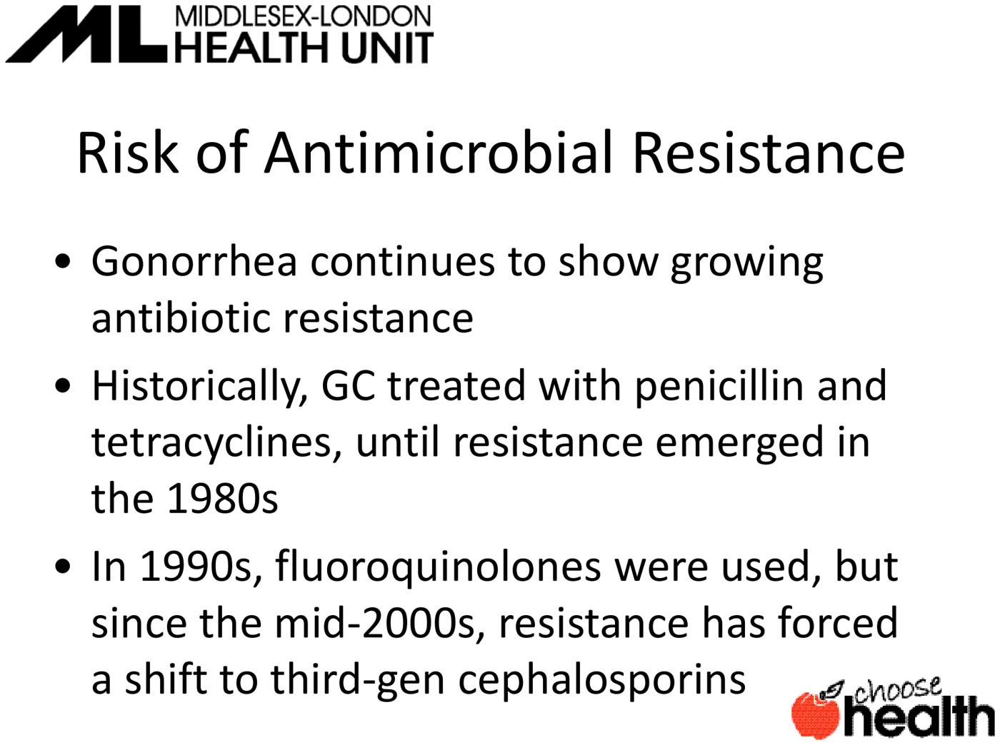
The gonorrhea escalator. Penicillin and tetracyclines → resistance in the 1980s → fluoroquinolones in the 1990s → resistance again → third-generation cephalosporins since the mid-2000s. We have gone from a tablet to an injection, and there is not much runway left.Risk Factors
A long list — with a point being made by its length.
The List
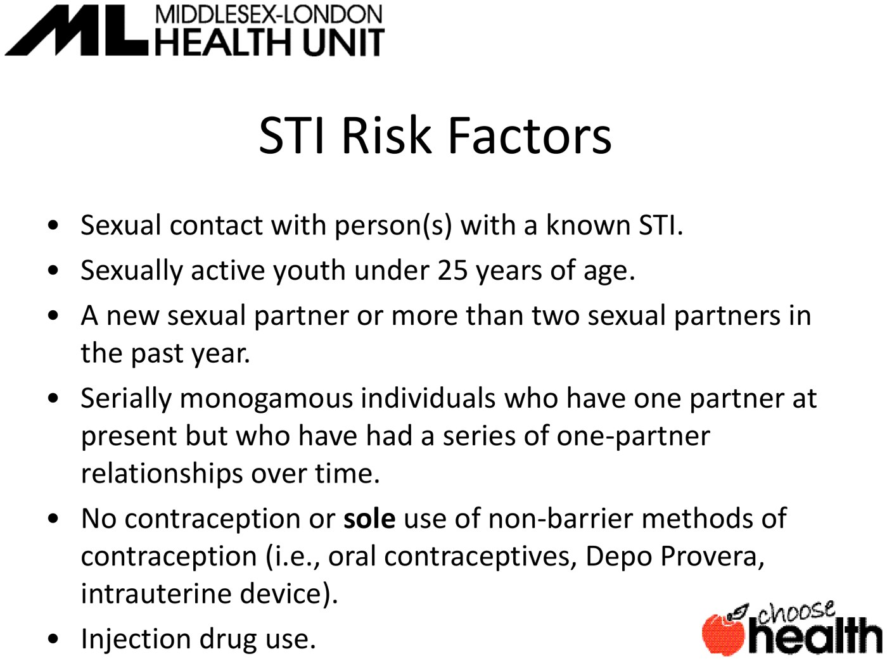
From the Canadian STI guidelines.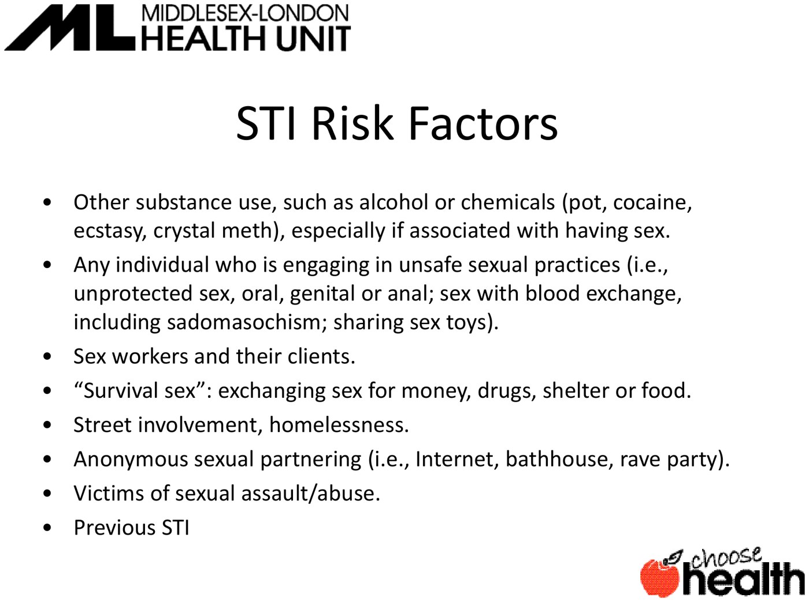
The second half.| Risk factor | The reasoning |
|---|---|
| Sexually active youth under 25 | Emphasised hardest. STIs circulate readily in this group — it shows in the chlamydia and gonorrhea numbers |
| New partner, or >2 partners in a year | More partners → higher probability of exposure |
| Serial monogamy | The subtle one. One partner at a time, but a series of them — and these patients often never get re-screened between partners |
| No contraception, or only non-barrier methods | An IUD, the pill or Depo-Provera is great at preventing pregnancy and useless at preventing STIs |
| Alcohol and other substances with sex | The conversation about condoms and contraception simply doesn't happen |
| Unsafe practices, blood exchange | Higher transmission probability, especially HIV where blood is involved |
| Sex work, survival sex, street involvement | More partners plus power dynamics that reduce barrier use |
| Anonymous partnering | No knowledge of a partner's history; no chance to ask about screening |
| Sexual assault or abuse; previous STI | A previous STI predicts a future one |
His framing: almost everybody falls into one of these categories at some point. Sex is common, normal and part of the human experience — which means everybody is at risk at some point in their life.
That is why the public health approach is not abstinence. It is reducing risk, and screening people with new or changing partners regardless of how they present. You will not remember all these risk factors — you are meant to remember the conclusion.
Reporting and Intervention
What public health does with the information, and what your legal obligation is.
Reportable Diseases
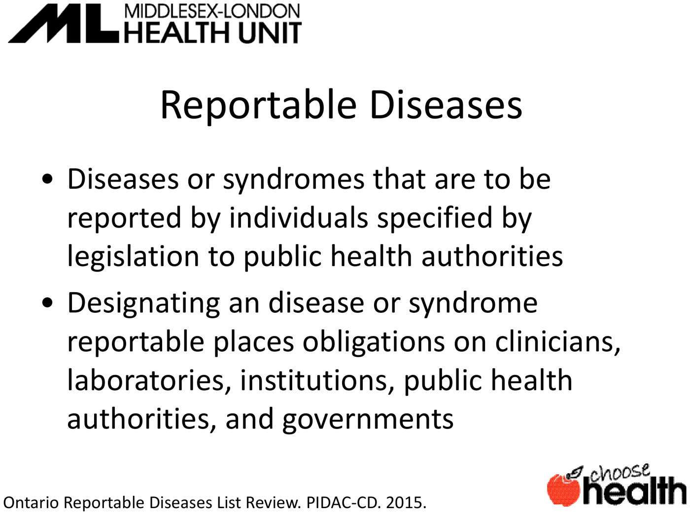
A legal obligation on clinicians, labs, institutions and governments. Chlamydia, gonorrhea, syphilis, HIV, hepatitis B and hepatitis C are all reportable.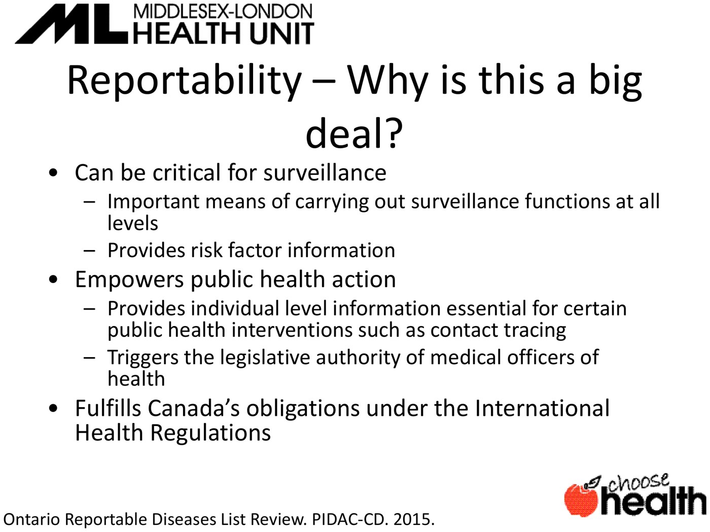
Three reasons it matters.What that looks like in practice: a syphilis report lets the health unit follow up with that individual, confirm they are treated, and identify, test and treat their contacts. It also lets a Medical Officer of Health say something more useful than "the whole community is at risk" — in London, that rising syphilis was concentrated among men who have sex with men, and among workers in the sex industry, which is what lets outreach be targeted.
The Pan-Canadian Framework
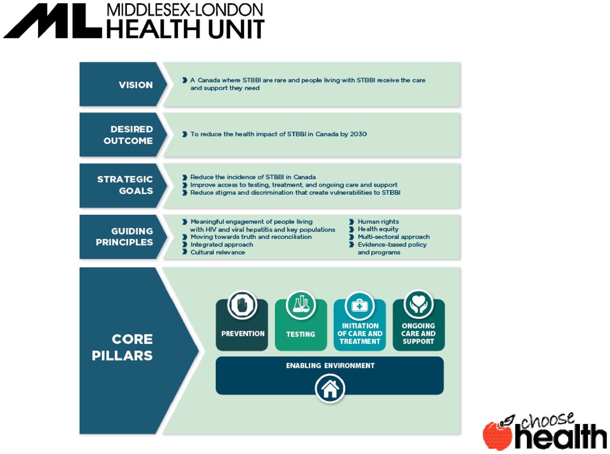
| Principle | What it means |
|---|---|
| Prevention | Population level: sexual health promotion embedded in primary, secondary and post-secondary curricula — not just STIs but healthy sexuality and consent. Individual level: asking patients about condoms, and making sure condoms are actually available |
| Testing | Identifies people so they can be treated, and identifies their contacts so transmission stops. For HIV especially: find it, treat it, undetectable viral load = no transmission |
| Initiation of care and treatment | Requires access to primary care. Without it, diagnosis achieves nothing |
| Ongoing care and support | Particularly for HIV, hepatitis C and hepatitis B |
Stigma
More stigma → fewer people get tested → fewer people tell their partners → fewer people get treated → more transmission.
So reducing stigma is not a nicety bolted onto the medicine. It is a transmission-control intervention.
His script for a patient is worth borrowing almost verbatim: chlamydia is the most commonly reported infectious disease; many people will have it at some point; it does not mean you are a bad person, and it does not mean you made some uncharacteristic mistake. It means you are a human being who had sex, like almost everyone does.
His Three Takeaways
- STIs are common, a major public health issue, and rising — largely because barrier use has fallen, thanks to effective contraception and PrEP.
- "Treatable" does not mean "minor." The long-term costs are infertility, antimicrobial resistance, and other adverse health effects.
- Your job has three parts: have the conversations, reduce stigma, and report.
And the practical instruction: bookmark the Canadian Guidelines on Sexually Transmitted Infections. You are not meant to memorise them — you are meant to be able to find them, which is exactly the caveat flagged on 4.6.
Built from Dr. Alex Summers' "Public Health and STIs" module (20 min, recorded September 2021): the recorded webinar and its slide deck. All images are slides from that deck, and the epidemiology figures are as presented there — local Middlesex-London data to 2018–2019, so treat the trends as directional rather than current. The auto-transcript is unusually noisy for this talk (STI appears as "babies," "guys," "Saudis," "FBI" and "eyes"; ceftriaxone as "a setback zone"; trichomoniasis as "a bonus"; and "higher risk of STIs" as "higher risk of suicide"), so all figures and lists here come from the slides. Related pages: 4.6 for the clinical approach, 4.5 for the discharge work-up.